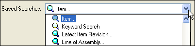
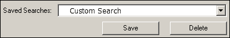

Activity: Search for and open documents
In this activity, learn how to find an existing Teamcenter-managed Solid Edge document using the search criteria you define. Also, learn to use Advanced Search capabilities to creat and save custom searches.
Following this activity, you will be able to:
-
Open a Teamcenter-managed Solid Edge document.
-
Search for particular Solid Edge documents in a Teamcenter-managed environment.
-
Create a customized search and save the search for future use.
Instructions for loading the activity files are found in Activity data set and configuration requirements. The activities assume ISO templates are loaded.
-
Double-click the Solid Edge icon .
Click Open  .
.
Sign in to Teamcenter.
For this activity, the location of the part file desired is not known, so you will search to determine the location of the file.
From the Open File dialog box → Settings group, choose Panes and open the Filter Options pane. Ensure Files of Type is set to Part documents (*.par).
Open the Advanced Search pane, and click the arrow to expand the Saved Searches list.

Notice there are a number of named searches predefined for you. For example, you can search on attributes related to Item Revision, Objects in Projects, or a number of other attributes.
From the list of saved searches, select Item.
Items are the fundamental objects you use to manage data in a Teamcenter-managed environment. Items are used to store data that is configuration or revision-controlled, such as business data from CAD files and document files created in Microsoft Office. Each item has a label containing two pieces of information: Item ID, a unique identifier, and an Item Name, a short description.
To define new search criteria for an Item, first clear any existing search criteria by clicking Clear All .
Double-click the cell beside Type and select Item.
Double-click the cell beside Owning Group and select Engineering.
To find the document based on your defined criteria, click Search.
When the search is complete, the Open File dialog box displays the search results.
Click the Item ID of the part you created in the previous activity.
A preview of the item is displayed in the Preview pane outside of the Open File dialog box.
Use the horizontal scroll bar at the bottom of the document list to view the attributes associated with your document.
There are several columns of attribute information displayed by default including: Item ID, Revision, Name, Type, and Description.
Click Open to open the file in the Solid Edge Part environment.
-
Using the Select command, change the height dimension of your base part to 50 mm.
On the QuickAccess toolbar, click Save  .
.
Click Teamcenter tab→Close.
Because the document changed since it was last saved to Teamcenter, the Upload dialog box is displayed, giving you the opportunity to modify existing document attributes.
When the Solid Edge option, Do not show common property dialog boxes is set, the document is saved to Teamcenter without displaying the Upload dialog box.
On the Upload dialog box, ensure the Action column is set to Check In and click Perform Actions.
In addition to using predefined searches to locate documents, you can define and save custom searches.
From the start screen, click Open .
In the Open File dialog box, open the Advanced Search pane.
Set the Saved Searches text box to Item.
Click Clear All to clear the existing criteria.
Double-click the cell beside Type and select the search criteria Item.
Double-click the cell beside Owning Group and select Engineering.
Double-click the cell beside Created After and then click the down arrow to display a calendar. From the calendar, select yesterday's date.
At the top of the Search pane, click the Saved Searches list box, and type Custom Search to give your search a unique name.

Click Save Search to save the search criteria you defined.
The saved search will be available in the My Searches folder on the Open File dialog box.
Click Search.
The name of the search you saved is displayed in the Browse group of the Open File dialog box and the results of the search are displayed in the document list.
If the search results do not display the file you are looking for, make sure the file type you desire is selected on the Filter Options pane prior to conducting the search. For example, if you are looking for a part, but the file type is set to assembly, the part will not be found by the search.
In the Open File dialog box ribbon, click Columns.
The Format Columns dialog box is displayed.
Select the check box adjacent to the Item Name and click OK.
-
Scroll the view of properties horizontally.
The Item Name is listed in addition to what is present by default. You can use the Columns command any time file properties are shown to modify the columns of properties displayed.
-
Click Open to open the file in the Solid Edge Part environment.
Select the Fit command in the status bar at the bottom of the graphics window.
On the Quick Access toolbar, click Save .
Click Teamcenter tab→Close.
On the Upload dialog box, validate your data, and then click Perform Actions to check-in the document.
In this activity, you learned how to use the Advanced Search pane to find a particular file based on a set of search criterion that you defined. Additionally, you learned how to create and save a custom search based on properties you chose as well as how to display additional file attributes using the Columns command.
Now you will be able to:
-
Run a search to find particular documents.
-
Create and save a customized search.
-
Open a managed Solid Edge document located using the Advanced Search command.
-
Customize the display of document attributes using the Columns command.
-
Objects which are used to store data that is configuration or revision-controlled are called _________________________.
-
True or False: Each item is described by a name, description, and creation date.
-
True or False: You can search for documents based on attributes such as Name, Item ID, and Revision using either the Search pane or the Advanced Search pane.
-
Name three Item Types delivered with Teamcenter.
-
True or False: Item Types are used to manage changes and track history of items.
-
What object is used to manage data files created by other software applications?
-
Non-Solid Edge documents such as Microsoft Excel and Word documents as well as image documents are saved in the same _________ _________________ as the parent or to a new Item and Item Revision.
-
True or False: The creation of custom searches requires special privileges.
-
Objects which are used to store data that is configuration or revision-controlled are called Items.
-
False — Each item has a label containing the Item ID, a unique identifier, and an Item Name, a short description. The creation date is not part of the label.
-
True — You can search for items based on several properties associated with the Item. The Name, Item ID, and Revision are three of the properties that can be used for search for items.
-
A few of the Item types delivered with Teamcenter are:
-
Item — used for data stored in the database that represents parts, subassemblies, and other items such as 2D or 3D images of models.
-
Design — maintains geometric data authored in CAD systems.
-
Document — used for data that is revision or configuration-controlled such as a test procedure or spreadsheet.
-
Standard — used for standard parts.
-
-
False — Item Revisions manage changes to Items.
-
Datasets are used to manage data files created by other software applications such as Microsoft Word or Excel documents.
-
A non-Solid Edge document is saved under the same Item Revision as the parent document or to a new Item and Item Revision.
-
False — The creation of custom searches do not require special user privileges.